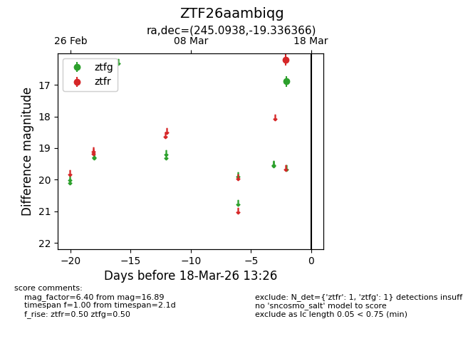
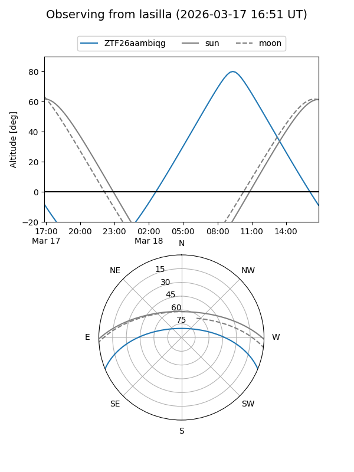
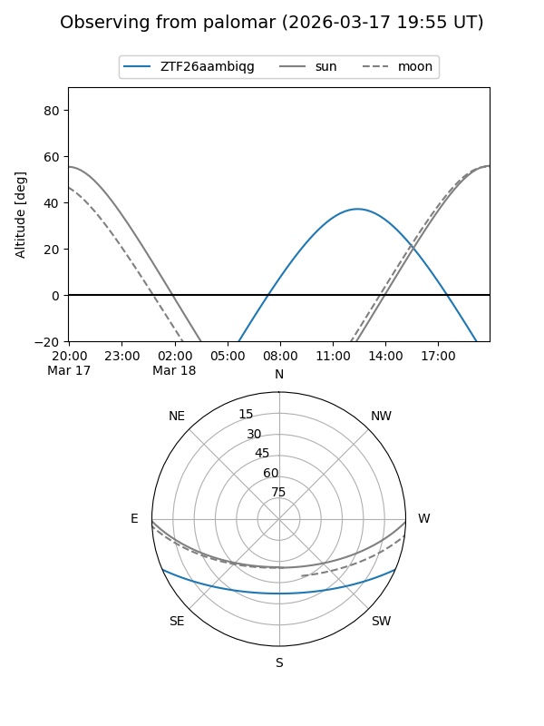

ZTF26aambiqg
Target ZTF26aambiqg at 2026-03-18 13:28
Aliases and brokers:
FINK: link
Lasair: link
ALeRCE: link
alt names
ZTF26aambiqg (ztf,fink_ztf)
Coordinates:
equatorial (ra, dec) = 245.0938,-19.33637
equatorial (HMS+DMS) = 16:20:22.51,-19:20:10.92
galactic (l, b) = (356.1237,+21.30486)
Flags:
Photometry:
last ztfg=16.89, ztfr=16.21
1 ztfg, 1 ztfr detections
Lightcurve

Visibility


Additional plots